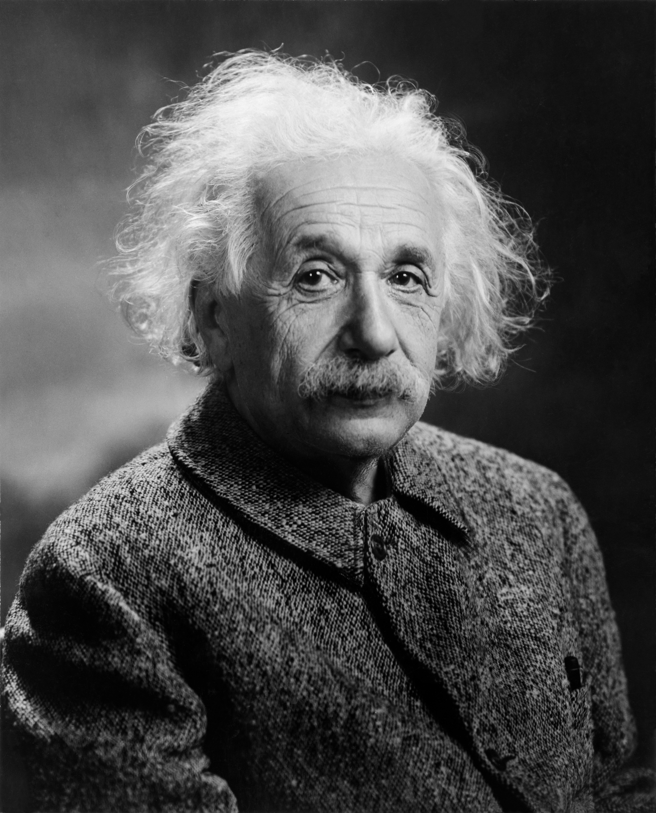

🌍 Top Scientists of the World

Albert Einstein
Albert Einstein was a German-born theoretical physicist widely regarded as one of the greatest scientists of all time. He developed the Theory of Relativity and his famous equation E = mc² explained the relationship between mass and energy. He won the Nobel Prize in Physics in 1921 and his discoveries continue to influence modern science.
Einstein's ideas helped shape modern space science and technology.

Isaac Newton
Sir Isaac Newton discovered the laws of motion and universal gravitation. He also made important contributions to mathematics and optics. His work formed the foundation of classical physics and helped scientists understand how objects move and interact.
Newton's book Principia is one of the most influential scientific works ever written.

Marie Curie
Marie Curie was a pioneering physicist and chemist known for her research on radioactivity. She discovered polonium and radium and became the first woman to win a Nobel Prize. She remains the only person to win Nobel Prizes in two different scientific fields.
Her work helped advance medical treatments and scientific research.